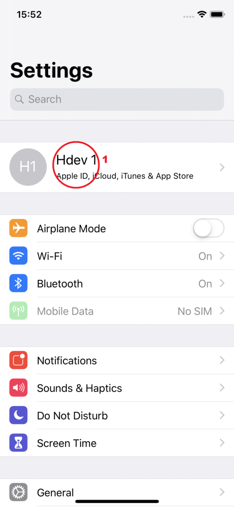

Animaze iPhone: Sign-in to iCloud message appears even though I am logged in to iCloud already

This happens when the iCloud Drive is toggled OFF, or Animaze’s access to the iCloud Drive is toggled OFF.
To allow iCloud Drive access to Animaze or toggle iCloud Drive ON follow these steps:
-
Go to your phone’s settings.
-
Tap on your Apple ID.
-
Tap on iCloud.
-
Scroll down to iCloud Drive.
-
Toggle it ON.
-
After you’ve toggled it ON scroll down and look for Animaze.
-
Toggle Animaze ON to allow iCloud Drive to access it.